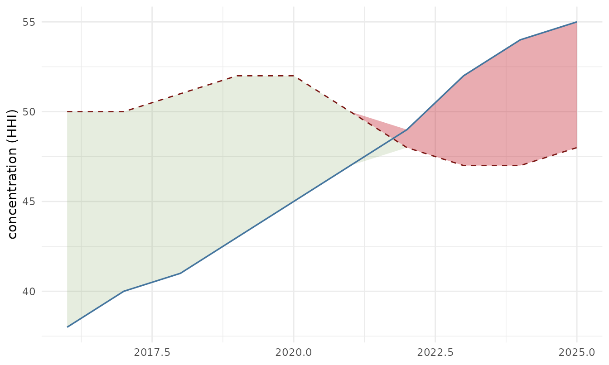
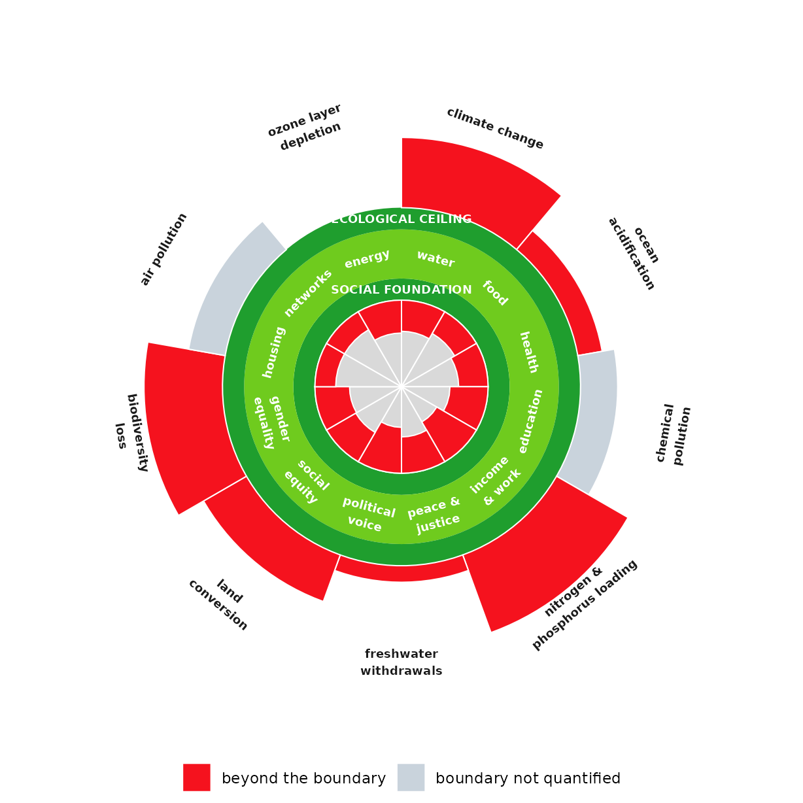

The idea
A boundary is not always a constant. Doughnut Economics and the
planetary-boundaries wheel draw the safe threshold as a fixed line, but
a system’s safe threshold often moves with its own capacity: a tourism
economy’s carrying capacity rises as it builds room stock and can be
lowered again by policy, a reserve buffer’s adequacy shifts with the
risk it faces. ggboundary draws the boundary as a series so
that movement is visible, and shades where the trajectory overshoots
it.
geom_boundary()
df <- data.frame(
year = 2016:2025,
hhi = c(38, 40, 41, 43, 45, 47, 49, 52, 54, 55),
cap = c(50, 50, 51, 52, 52, 50, 48, 47, 47, 48)
)
ggplot(df) +
geom_boundary(df, "year", "hhi", "cap") +
labs(y = "concentration (HHI)", x = NULL) +
theme_minimal()
The dashed line is the boundary, moving. Red marks overshoot, green marks slack.
The Doughnut, as the single-instant snapshot
doughnut() draws the other half of the grammar: many
dimensions, one moment. The two rings carry independent dimension sets,
so a twelve-part social foundation and a nine-part ecological ceiling
divide the circle differently, as in Raworth’s original. Shortfalls bite
inward toward the hole, overshoots break outward past the ceiling, and
both are red.
social <- data.frame(
dimension = c("water", "food", "health", "education", "income & work",
"peace & justice", "political voice", "social equity",
"gender equality", "housing", "networks", "energy"),
shortfall = c(0.36, 0.29, 0.34, 0.44, 0.53, 0.42,
0.53, 0.39, 0.40, 0.24, 0.24, 0.38))
ecological <- data.frame(
dimension = c("climate change", "ocean acidification", "chemical pollution",
"nitrogen & phosphorus loading", "freshwater withdrawals",
"land conversion", "biodiversity loss", "air pollution",
"ozone layer depletion"),
overshoot = c(0.85, 0.30, NA, 1.00, 0.20, 0.60, 0.95, NA, 0))
doughnut(social, ecological)
Read the two together. The Doughnut says where you stand across many
dimensions at one instant; geom_boundary() says how one of
them got there, and whether the boundary itself was moving while it
did.